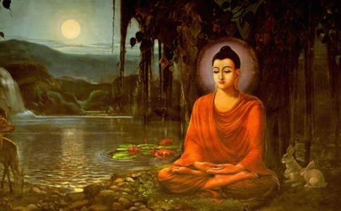

首度行自他交换的 以前，
我们知道，
佛陀在过去生为凡夫身时，曾经转生为印度商人的儿子，名为扎沃之女，也是因为修了自他交换的菩提心，从恶趣中解脱。
古时候，印度有特别的种姓制度，各有各世袭的行业，祖辈做什么，子孙就要世袭，不能改行，种姓之间的岐视非常严重。其中有一种海中捞宝的行业，要乘船到海中，寻找珊瑚或是珍珠之类的宝物。当时有一个叫做扎沃的人，就是作海中捞宝的行业。他娶了太太以后，所生下的儿子，还没有长大成人，一个个都夭折了。后来，他太太又怀孕了，他很害怕这个孩子很快又会死掉，所以就用女孩的名字，为儿子命名为扎沃之女，所以扎沃之女其实是一个男的。这个孩子生下来以后，扎沃就出门去海中捞宝。不幸在海中捞宝的时候，遇到了大风浪，船沉没了，全船的人都死了。
扎沃之女的妈妈很担心这个孩子长大，如果继承父业，生命会有危险，所以就让孩子一直待在家里。当这儿子慢慢成人以后，他觉得应该出去做一些事了。于是，他问妈妈说：“爸爸以前是做什么行业的？”他妈妈就骗他：“你爸爸以前是卖粮食的。”于是，他就出去卖粮食，一天可以赚到印度币“嘎夏巴”四元钱，他很高兴拿回家孝敬妈妈。第二天他再去卖粮食的时候，那些卖谷粮的人看到他说：“你爸爸以前不是做这个行业的，你不可以卖粮食。”所以他被人赶走。回家以后，他又问妈妈说：“别人说我不能卖谷粮，到底爸爸是做什么行业的？”他妈妈又编另外一个谎言说：“你爸爸是卖香的。”于是，他又去卖香。这次卖到了八元钱，又拿回来孝敬妈妈。可是第二天，那些卖香的人告诉他，他根本不是从事这个行业的种姓，不让他卖香，又把他赶回去。
接着，他妈妈又骗他，他爸爸以前是卖衣服的。于是他就去卖衣服。因为卖衣服赚得比较多，赚了十六个嘎夏巴，可是又被那些卖衣服的人赶出来，告诉他，他根本不是卖衣的种姓。他又回到家里，问妈妈说：“到底我爸爸是做什么行业的？”他妈妈就告诉他说：“你爸爸是卖珠宝的。”于是他又去卖珠宝。这一次，他卖珠宝，赚了三十二元钱，全部孝敬了妈妈。最后，那些卖珍宝的人对他说：“你爸爸以前是做到海上捞宝这个行业的，你不可以在这里卖珠宝。”所以他又被人赶走。
当他知道实情，知道妈妈一直骗他之后，他很
很不幸的，这艘船也碰上了大风浪，海浪把船打翻了，大部分的人都死了，他刚好抓住一块船板，就在海上一直漂流。没想到，漂呀漂的，漂到了一座海岛上。他一上岸，看到岛上有一座非常美丽的
他走了一天以后，看到了一座比欢喜城更庄严的具喜城，到了那里之后，有八个仙女接待他，让他住进舒适的房子，供养他最好吃、最好穿的，也叮咛他不可以再往南走，否则会有生命危险。他住了一天以后，又不听劝告，又执意继续往南走。
他走着走着，来到一座比具喜城更
不久，他看到一座非常漂亮的白色梵师城堡，高入云霄，到那里以后，也有非常美丽的三十二位仙女，请他到里面住，供养他最好的一切。他住在那里的时候，她们又一直叮咛他不要往南走，否则会有危难，他还是不听，继续往南走。
从他经历的过程可以看出，从出现的四个、八个、十六个到三十二个的仙女，其实就是他供养他妈妈印度币嘎夏巴的数字，因为这些供养的福报成熟了，所以有这些同等数目的享受。
虽然最后三十二位仙女叮咛他，往任何一个方向去都可以，但是如果往南走，一定会遇到危险。他因为业力遮障的关系，听不进去，所以照样执意往南走。最后，他到了一座巍巍高耸的铁造城堡，城门和城墙都是用黑色的铁建筑的。城门口坐着一个又高又大，眼睛泛红，皮肤乌黑的人，手上拿着一根长长的铁棒。他问这个人：“城堡里面有些什么？”那人不理他，他很好奇地打开城门，进去一看，里面都是长得像城门口的那个人，又高又大，眼睛红红的，皮肤黑黑的，他吓得毛骨悚然，没有想到自己竟然活生
接着，他看到一群人，每个人的头上，都有铁轮子不断在滚动旋转，每个人的脑袋都被转破裂开，喷洒出白色的脑浆。他很惊吓地问他们：“你们为什么受这样的折磨？”他们说：“我们以前曾经用脚踢过妈妈的头，因为这样的恶业，所以来到这里受异熟果报。”他一想：“糟糕了！我出门前，也踢过妈妈的头，我应该是被这种业力牵引过来的吧！”他这一想，马上有一个铁轮来到他的头上旋转，他的脑袋立刻破裂，脑浆一直往外喷洒，他极度痛苦，痛得受不了。他想到以前应该
他又想：“天底下有很多人，用这种方式伤害自己的父母亲，每一个做过这种恶业的人，受到业力的牵绊，没有办法控制自己的心，最后一定会受到这种恶果。”接着，他又想：“天下打过自己父母亲的人应该不少，如果打过自己父母亲的人，都要受到铁轮旋转，榨出脑汁的果报的话，实在是太痛苦了！”他于心不忍，于是发心希望代众生受苦：“愿天下所有踢打过父母亲的人，都能够忏悔罪业，从此以后不要踢打自己的父母亲，要孝敬父母，希望我能够代替他们承受所有的业报，希望这些众生不要再受这样的磨难了！”当他这样发心时，头上的铁轮突然“啪！”一声，掉落到地上，他立即从无边的痛苦中解脱，上升到空中，享受解脱的安乐。